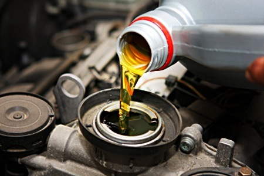
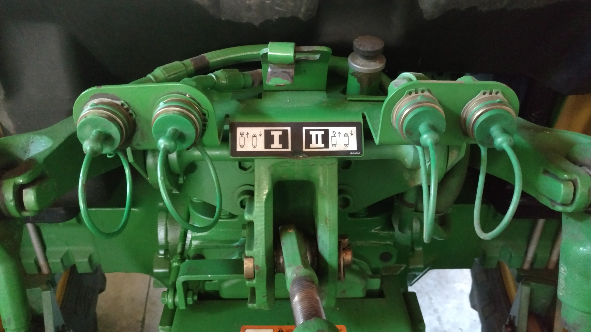

Manutenção geral
Revisão preventiva, ajustes e manutenção completa do trator, com valor de R$ 450 inicial.
A VB Manuntenções oferece o melhor conserto de tratores e máquinas pesadas da região.
Conheça os serviços
Revisão preventiva, ajustes e manutenção completa do trator, com valor de R$ 450 inicial.

Troca de óleo e filtros para manter o motor trabalhando bem, com valor de R$ 300 inicial.

Diagnóstico e reparos no sistema hidráulico e seus componentes, com valor de R$ 600 inicial.
Uma oficina preparada para cuidar de máquinas agrícolas com organização, experiência e atenção em cada detalhe.